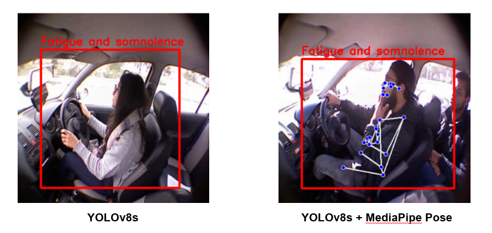

ต้องการสร้างระบบที่สามารถระบุและจำแนกพฤติกรรมเสี่ยงของผู้ขับขี่จากภาพและวิดีโอได้ เพื่อเป็นแนวทางในการเฝ้าระวังความปลอดภัยบนท้องถนน
เก็บรวบรวมภาพจาก Roboflow และทำการ annotate ชุดข้อมูลเองให้เจาะจงกับสถานการณ์พฤติกรรมการขับขี่ จากนั้นฝึกโมเดล object detection เพื่อระบุและจำแนกพฤติกรรมจากภาพและวิดีโอที่ใช้งานผ่านเว็บได้
ใช้สถาปัตยกรรม YOLOv8s ในการตรวจจับวัตถุ ร่วมกับ MediaPipe Pose สำหรับวิเคราะห์ท่าทางของผู้ขับขี่ ฝึกโมเดลด้วย Python บนชุดข้อมูลที่เตรียมเอง และนำเสนอผลงานในหัวข้อ "Vehicle Driver Risky Behavior Detection using YOLO and MediaPipe Pose"
ได้รับรางวัลระดับ "Very Good" จากการนำเสนอผลงานในงาน AUCC 2026 และได้ประสบการณ์ตรงในการทำ object detection ตั้งแต่การเตรียมข้อมูลจนถึงการฝึกโมเดล